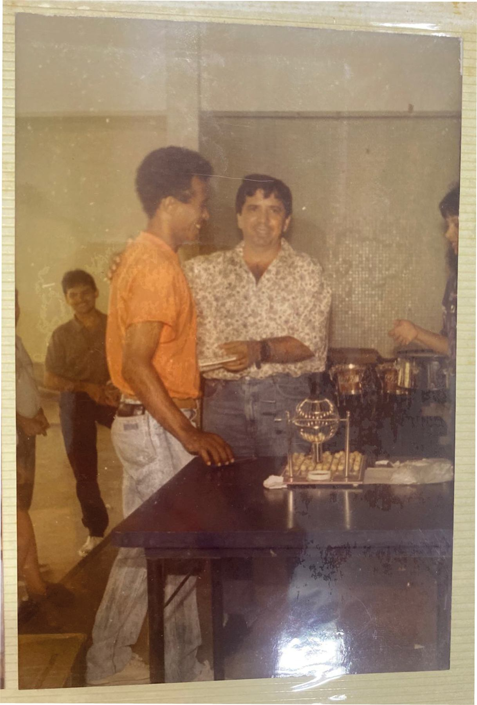
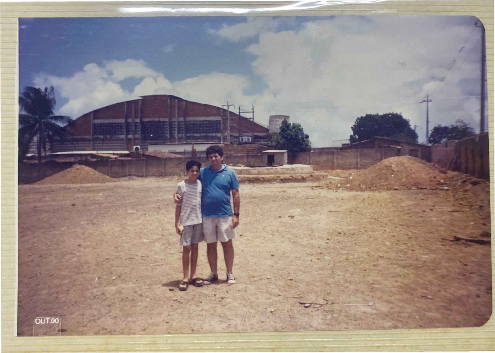
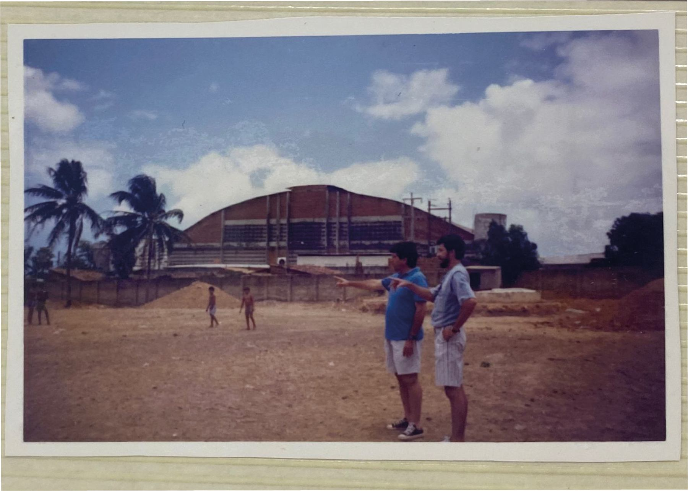
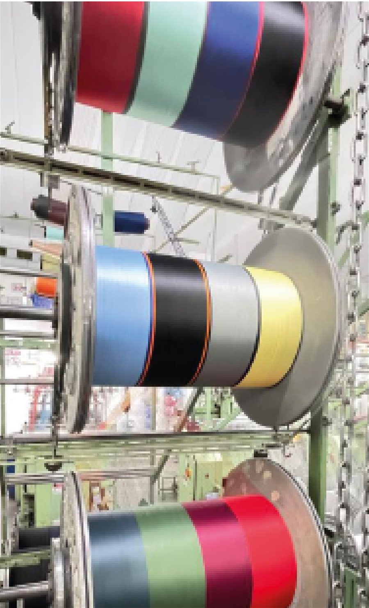
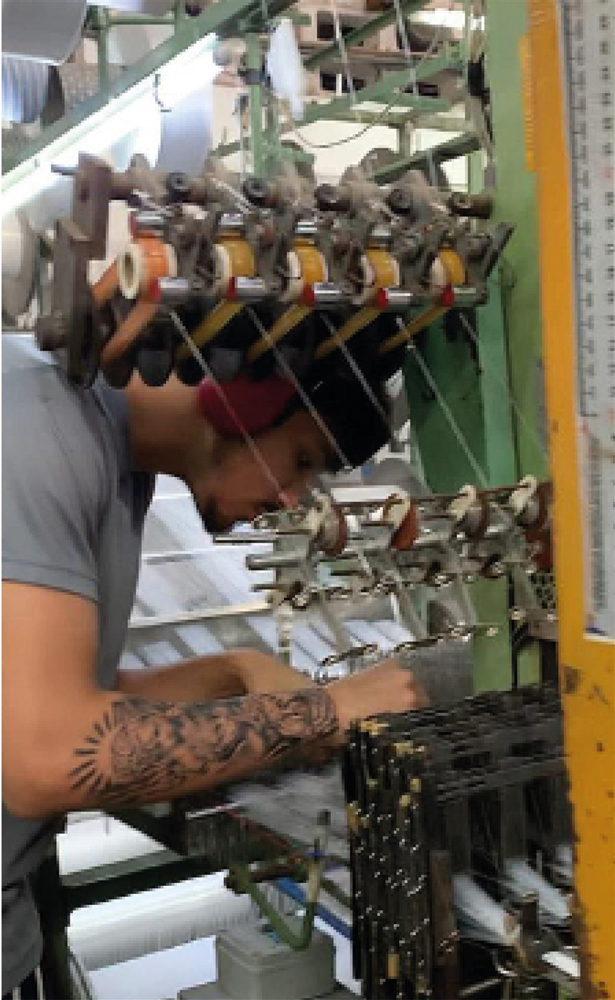
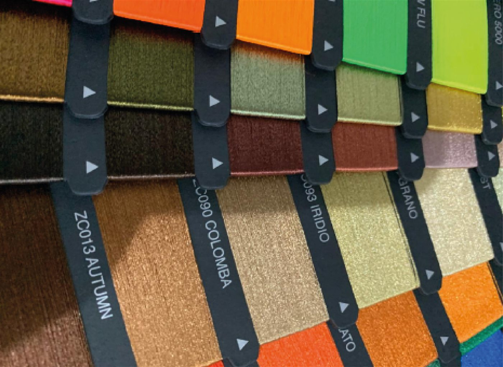

Stik Elásticos
Com espírito empreendedor, a STIK nasce da vontade de promover soluções ágeis em sintonia, com um atendimento customizado, acreditando no potencial criativo, e sobretudo, assegurando qualidade em tudo que faz.



Fundada em 1968, em Fortaleza (CE), como Passamanaria do Nordeste S/A pela família Fontenele, a STIK nasceu para atender às necessidades da indústria de moda íntima, oferecendo matéria-prima de qualidade, preços justos e atendimento diferenciado.
Com uma trajetória marcada pela inovação e pelo atendimento ao cliente, segue investindo em tecnologia, pessoas e excelência para entregar produtos que unem desempenho, beleza e qualidade em cada detalhe.
Desde 1968 no mercado Brasileiro.

Referência na produção de fitas elásticas e rendas no Nordeste.

10.200 m² de área construída.

+100 produtos de elásticos diversificados.
+30 cores em nossa cartela.



A história da STIK é construída pela constante busca por evolução.
Mais do que produzir elásticos, desenvolvemos soluções que conectam criatividade, desempenho e tendências, contribuindo para que grandes ideias se tornem coleções que inspiram e se destacam no mercado.